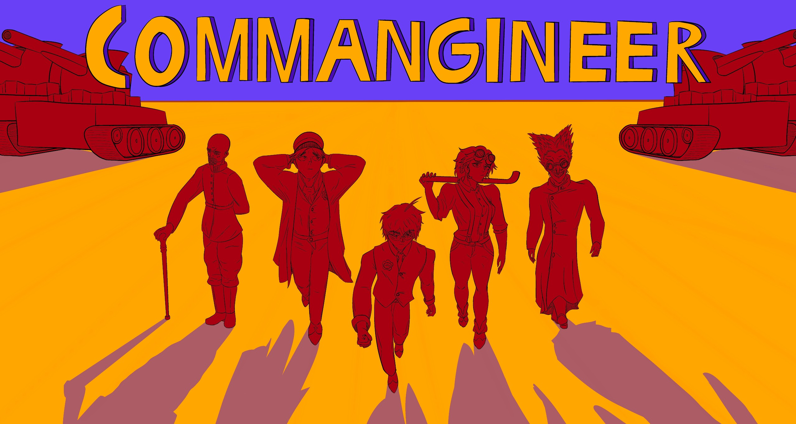
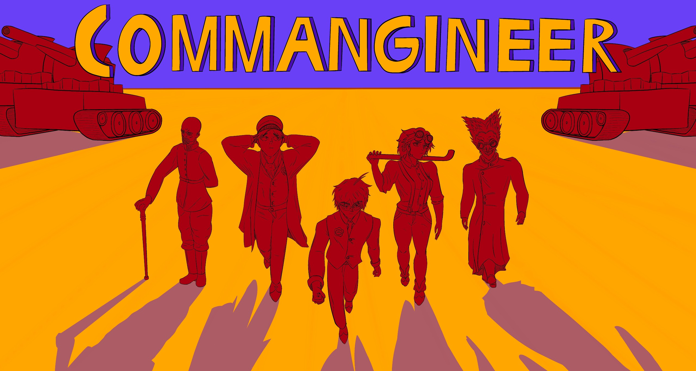

Before "Commangineer"

Before the Fall
In 1880, the world seemed to be reaching the end of history. Peace was flourishing around the world, with businesses, factories, and cities sprawling.
The Auuki
During a mining expedition in Nebraska in 1882, spontanous animals attacks sparked. Observers noticed animals working together, united in hatred against humanity, and a spike in forest growth. President Chester A. Arthur declared a national emergency, and deployed the national guard.
America's Fall
President Arthur struggled to rally the nation to fight as this force of nature, dubbed the "Auuki", seized massive portions of the american interior, culminating in the fall of Chicago, Washington, New York City, and the collapse of the federal government.
Earth's Demise
After America's fall, nations of the world struggled to militarize, and with the failed defenses of Africa and South America, the Auuki secured dense jungles to attack the rest of the world from. With this strengthened threat, Europe and Asia's days were numbered.
Salustone
As the rest of Earth was falling, the navies of the world moved to secure a small chain of islands in the Atlantic, Salustone. Culminating in a great naval battle and costal defense, Salustone held against the Auuki and took what refugees it could.
The Salustone Guard

Alex Terne
Commangineer, Salustone Guard Corps
The lovable protagonist, and new-age engineer fighting against the Auuki.
Alfred Electrum
Professor of Automatonics
Alex Terne's professor at university, who took the steam technology of previous years and pushed it to its limits.
Burchardt Oak
Sergeant, Salustone Guard Corps
The Sergeant directly overseeing the Commangineer project, testing the power of automatons against the Auuki
Cecil Magnox
Prime Captain, Salustone Guard Corps
The Commanding Officer of the Salustone Guard Corps, overseeing all major military actions.

Unknown
Unknown
A mysterious force, having infiltrated the Salustone Guard Corps, sabotaging it's movements, with their identity obscured.